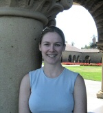

A warm welcome to our new graduate students.
Here's some information about them and their research interests:
I grew up in the eastern, mountainous part of San
Diego County. As an undergraduate, I attended UC
Irvine and the University of Goettingen, majoring
in linguistics and German. I completed my
master's in German last spring at Georgetown. My
disparate interests in linguistics include
theoretical approaches to modeling language
change and variation, various issues in formal
syntax and phonology, and sociolinguistics (in
its broadest sense). I'm looking forward to
exploring new areas in the field, too.
I graduated from Tel Aviv University and am interested
in investigating linguistics from a computational
point of view, and in enhancing natural language
processing by using linguistic analysis.

Marie-Catherine de Marneffe
I am from Belgium where I did my graduate
studies at the Université Catholique de Louvain.
My native language is French as my
accent cannot hide! So far I have been working in
computational linguistics and I would like to
specialize in semantics. Pragmatics is also one
of my interests. As a Classics graduate, I would
thoroughly enjoy carrying out work in Latin and Greek again.
I was born and raised in Columbus, Ohio and
graduated from the Ohio State University. I've been married
for three years and my wife, Angela, is
originally from a small town in Northeastern
Ohio. I am mostly interested in syntax,
particularly issues pertaining to processing
complexity, learnability and
acquisition. Recently I have also become
interested in typology, language contact and the
interface between morphology and syntax.
I completed my undergraduate degree at
Columbia University in Literature. After several
years as a journalist, I moved to France to
learn French and discovered linguistics, in which
I obtained a Maîtrise from the Université de
Grenoble 3. I then completed a M.Sc. in Logic
from the Institute for Logic, Language and
Computation in Amsterdam and went on to work
at the Universität Konstanz on case semantics.
I'm originally from tornado-torn Iowa City but I
haven't really lived on the farm since I went off
to college (Yale '99). After getting my BA in
English, I spent a year in Pakistan on a creative
writing Fulbright, then moved to San Francisco
(I'm a UI designer at Microsoft). I'm especially
interested in how language works in
human-technology interactions and in documenting
endangered languages in Africa (how do dominant
and endangered languages affect one another?).
We'd also like to welcome our various department visitors.
Some of them and their research interests are included below.
We'll tell you about other visitors in subsequent issues, including
Heriberto Avelino,
Adams Bodomo,
Lars Hinrichs,
and
Daria Suk...
Sharon (an occasional Ballroom Dance competitor) is a postdoc in our
department this year, having just finished her PhD in the Department
of Cognitive and Linguistic Sciences at Brown University, where she
worked with Mark Johnson (PhD Stanford Linguistics, 1987). She has
been focusing on computational linguistics, language acquisition, and
the interface between the two and is particularly interested in
unsupervised learning of language, and morphological and phonological
acquisition.
John, who got his PhD in Cognitive Science from Johns Hopkins in 2003,
is visiting us just for the Fall quarter. His research is in the area
of computational linguistics, seen as part of the larger
interdisciplinary enterprise of cognitive science. In his work, he
relies on the formal methods of logic and probability, as well as the
empirical findings of linguistics and psycholinguistics.
Graham is a Visiting Assistant Professor in our department this year,
teaching courses primarily in semantics. Otherwise, he is a Lecturer
in Computational Linguistics in the Cognitive Science Program at the
University of Osnabrueck. He works on the formal and computational
semantics of temporal expressions and adverbial modification, among
other things. Graham is actually from Palo Alto; he got his BS in our
Symbolic Systems Program and then went on to get his PhD in
Linguistics and Cognitive Science at the University of Rochester.
Sander is here for the Autumn quarter to do corpus research on case
assignment of Finnish adpositions. He recently finished a master's
thesis on adpositional case and in January 2007 he'll start as a PhD
student at the Radboud University Nijmegen, within Helen de Hoop's
PIONIER Project: Case Cross-Linguistically. His research interests
are: case, syntax, semantics, OT...
The department will have a very different feel this year, as so many
of our graduate students have left the nest... Here's the most recent
information we have on what they're doing:
Luc Baronian is now an Assistant Professor at the Université de
Québec à Chicoutimi, and we see he has a `welcome grant'
for 2006-2007.
John Beavers is a Visiting Assistant Professor in the Georgetown
University linguistics department.
Lev Blumenfeld will be an Assistant Professor at Carleton University starting
in 2007. But in the meantime, he'll be teaching in the UC Santa Cruz Linguistics Department.
Kathryn Campbell-Kibler is a Visiting Assistant Professor in the
Department of Linguistics at the University of Michigan.
Brady Clark, who's been away postdocing (postdocking?) for a couple of years,
has now accepted an Assistant Professorship in the Department of Linguistics
at Northwestern University.
Ashwini Deo is a Lecturer at Yale University this year.
Florian Jaeger has accepted an Assistant
Professorship at the University of Rochester in the Brain and
Cognitive Sciences Department. But first, he'll be a postdoc for a few
months at UC San Diego, where (among other things) he'll collaborate
with Roger Levy.
Andrew Koontz-Garboden has accepted a position as Lecturer at the
University of Manchester. But you'll still see him around, since he doesn't
start until Jan 2007.
Roger Levy will now begin his job as Assistant Professor at
UC San Diego. For the last year, he's been a postdoc at the University
of Edinburgh.
JP Marcotte is continuing as a Visiting Assistant Professor at the
University of Minnesota.
David Oshima is a Visiting Assistant Professor in the Department of
Languages and Literatures at Arizona State University.
Rob Podesva is now an Assistant Professor of Linguistics at Georgetown
University.
Mary Rose is a post-doctoral fellow in the Ohio State
University Linguistics Department.
Rebecca Scarborough (AB Stanford 1999 - Linguistics and French with
honors) has accepted an Assistant Professorship at the University of
Colorado, Boulder, but she'll still be around this year, finishing up
her Stanford Humanities Fellowship (and teaching a couple of classes).
Judith Tonhauser is now an Assistant Professor in the Linguistics
Department at the Ohio State University.
- MONDAY, 25 SEPTEMBER
UC Berkeley Linguistics Department Colloquium
[http://linguistics.berkeley.edu/events/]
4:00pm. 182 Dwinelle (Berkeley)
Maria-Rosa Lloret (Universitat de Barcelona)
Prominence-driven epenthesis: evidence from Alguerese Catalan
- THURSDAY, 28 SEPTEMBER
CSLI Cognitive Science Lunch
12:30 PM. Cordura Hall, Room 100.
Hubert L. Dreyfus (UC Berkeley)
Detachment, Freedom, and Rationality:
Should we Accept McDowell's claim that we are essentially Rational Animals?
-
FRIDAY, 29 SEPTEMBER
Stanford Semantics and Pragmatics Workshop
[http://www-linguistics.stanford.edu/semgroup/]
3:00pm. Margaret Jacks Hall 460:126
Shiaowei Tham (Defense Language Institute) and
Hooi Ling Soh (University of Minnesota/National University of Singapore)
Discourse effects of lexical specification:
The case of the Mandarin aspectual particle -LE
- For local linguistic events, always consult the Department's
event page, available RIGHT HERE
- Got broader interests? The New Sesquiped recommends reading or even
subscribing to the CSLI Calendar, available HERE.
- What's happening at UC Santa Cruz? Find out HERE.
- What's going on at UC Berkeley? Check it out HERE.
Want to contribute information? Want to be a reporter? Want to see
something appear here regularly? Want to be a regular columnist? Want
to take over running the entire operation? Contribute something at the
top of this page (assuming that's working) or write directly to
sesquip@gmail.com.
September 20, 2006
Vol. 3, Issue 1
IN THIS ISSUE:
This Issue's Sesquipedalian Staff
Editor in Chief:
Ivan A. Sag
Design: Philip Hofmeister
Production Consultant: Philip Hofmeister
Reporter: Beth Levin
Photoshop Fiddler: Penny Eckert
Inspiration:
Melanie Levin and
Kyle Wohlmut